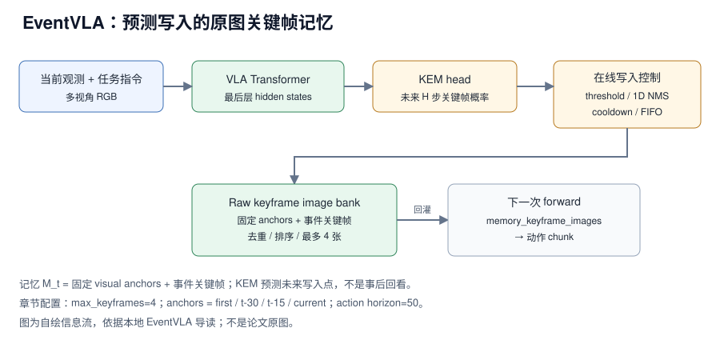

EventVLA 的做法可以一句话概括：不让 VLA 把所有历史帧都塞进上下文，也不把历史压成一个 latent 向量，而是用 KEM 在当前 hidden states 上预测“未来 action horizon 内哪一步会出现关键证据”，只把少量原始关键帧存进 runtime memory，下一次 forward 再作为额外视觉输入回灌。本地章节给出的可核验配置是 4 个 temporal anchors（first / t-30 / t-15 / current）、最多 4 张关键帧、action horizon 50、训练 100000 步、8 个 RoboTwin-MeM 任务。章节没有给成功率、延迟、显存或参数量数字，本文不补写性能结论。
来源约定：本文事实只取自本仓库 EventVLA 导读，没有用模型记忆补写论文细节。
标注约定：【章节】指本地导读自己的归纳；【章节转述】指导读对论文、arXiv HTML、官方 README 或项目页的转述。代码 commit 与论文版本号章节未给。
版本：arXiv 2606.20092（章节链接v1HTML）；代码 commit 章节未给；查阅日期 2026-11-01。
1. 论文与官方资源
| 资源 | 入口 | 阅读用途 |
|---|---|---|
| 论文 | arXiv:2606.20092 | 方法、监督、训练课程与实验 |
| 源码 | InternRobotics/EventVLA | 仿真训练/评测、KEM 与 memory 实现 |
| 权重 | Hugging Face: ganlinyang/EventVLA | released checkpoints |
| 项目页 | EventVLA Project Page | 总览图、框架图与视频 |
| 数据集 | RoboTwin-MeM | 8 个非马尔可夫记忆任务；LeRobot 2.1 与 HDF5 |
| 依赖 | RoboTwin 2.0、RMBench、StarVLA | 仿真环境、benchmark 与基座依赖 |
论文题目：EventVLA: Event-Driven Visual Evidence Memory for Long-Horizon Vision-Language-Action Policies；arXiv：2606.20092；版本：章节引用 2606.20092v1；代码 commit：章节未给；查阅日期：2026-11-01。
开源边界：章节转述官方 README：仿真训练/评测代码、RoboTwin-MeM 数据与 checkpoint 已放出；real-world inference/evaluation code 与 real-world fine-tuned model 仍在 Todo。因此本文只把“仿真可跑”当成可核验部分，不承诺实机复现。
2. 核心问题：关键证据会消失，VLA 怎么记住
一句话：EventVLA 重新分配的是“历史信息存在哪里”这个接口——不是把历史压进模型隐状态，而是把少量原图关键帧存在 runtime 侧，等后续决策需要时再作为视觉输入看一次。【章节】

图 1：EventVLA 的 anchors、KEM 写入控制与原图记忆回灌。自绘，依据本地导读；不是论文原图。
章节把普通 VLA 的长任务记忆瓶颈归成三类：
- 证据消失：目标颜色、标签、顺序或路线只在某几帧可见，之后被遮挡或移出视野。
- 历史太长：把所有历史帧拼进上下文会带来显存、延迟和冗余。
- 压缩太狠：把历史压成一个 latent memory 可能丢掉细节，多事件任务尤其明显。
对比主流路径：全历史帧拼接 / 单一 latent memory → 固定视觉 anchors + 预测式稀疏关键帧。【章节】
- 节省了什么：上下文只多几张图，不需要保存整段视频，也不需要把历史编码成神经记忆库。
- 保留了什么：原图细节，包括颜色、位置、路线、顺序与遮挡关系。
- 代价是什么：memory 在 Python/runtime 侧维护，写入策略要单独训练（KEM），还要一套 threshold / NMS / cooldown / FIFO 控制。
- 读者该学什么：记忆是一个“写什么、何时写、写多少”的策略问题，不只是模型里加一个 memory token。
3. 模型结构与张量流
3.1 记忆组成：固定 anchors + 事件关键帧
章节给出的记忆组合是一行加法：
$$
M_t = \text{foundational visual anchors} + \text{event keyframes}
$$
其中 anchors 是固定规则、不需要学习；event keyframes 由 KEM 预测写入。【章节】
| 组成部分 | 规则 / 来源 | 保存形式 | 作用 | 章节证据 |
|---|---|---|---|---|
| 初始帧 | 固定规则 | 原图 | 保留任务开始时的全局场景布局 | 去掉后效果明显下降【章节转述】 |
| 短期历史窗口 | 固定规则：t-30、t-15、当前帧 | 原图 | 保留最近运动趋势与当前交互阶段 | 去掉后效果明显下降【章节转述】 |
| 事件关键帧 | KEM 预测未来写入点 | 原图 | 保存中途短暂出现、后面看不到的证据 | KEM 的核心输出【章节】 |
| 容量与顺序 | max_keyframes=4；去重、按时间排序、FIFO | runtime image bank | 防止 buffer 被冗余帧填满 | 配置项【章节转述】 |
关键点是：anchors 与 event keyframes 解决的不是同一件事。anchors 给“任务从哪开始、最近在做什么”，KEM 给“哪一刻的画面以后还会用到”。章节据此解释为什么单纯“挑关键帧”不够。【章节】
3.2 KEM：预测未来哪一步值得写
KEM（Keyframe Evidence Memory）不是事后回看整段视频再挑帧，而是在当前 VLA hidden states 上预测未来 action horizon 内每一步出现任务关键视觉证据的概率。【章节】
| 阶段 | 输入 | 输出 | 为什么需要 |
|---|---|---|---|
| 1. hidden state 提取 | 当前观测 + 指令 → VLA Transformer | 最后层 hidden states | 复用策略自身的表征，不另起一个视觉模型 |
| 2. KEM head | hidden states | 未来 H 步每步的 keyframe probability | 把“写记忆”与动作计划绑定 |
| 3. 候选筛选 | 概率序列 | 稀疏事件位置 | 只按概率写会让峰值附近连续多帧重复入 buffer |
| 4. 延迟兑现 | 预测出的 offset | target_step 的 pending request | 预测的是未来，必须等环境推进到那一步才能取图 |
| 5. 取图与选视角 | 到达 target_step 的观测 | 主视角原图 | 多视角里选一张作为证据 |
| 6. buffer 维护 | 新关键帧 | append → 去重 → 时间排序 → FIFO | 控制容量，最多 max_keyframes 张 |
| 7. 回灌 | 下一次 forward | memory_keyframe_images 输入 | 让后续动作预测能重新看到证据 |
在线写入控制是效果的一部分，不是纯工程细节：
- confidence threshold：只接受置信度足够高的候选。
- 1D NMS：把连续高概率峰值压成一个稀疏事件。
- temporal cooldown：防止短时间内重复写入几乎相同的帧。
- FIFO buffer：超过容量后丢弃较旧关键帧。
章节的原话意思是：没有这套控制，memory buffer 会从“关键证据记忆”退化成“短时间重复截图集合”。【章节】这也是本文最值得借鉴的工程点之一。
坑：第 4 步的“延迟兑现”意味着 KEM 预测的不是当前帧，而是未来 offset；读代码时要确认 pending request 在环境推进、episode 重置和并行环境下的清理逻辑，否则会取错帧或泄漏内存。章节没有给这部分实现细节。
3.3 自动监督与 teacher-to-student 课程
KEM 需要知道哪些帧是关键帧。章节转述论文与附录：用 Qwen3-VL 离线从 demonstration videos 和 task descriptions 中抽取 task-critical intermediate event timestamps，避免人工逐帧标注。【章节转述】
两个直接后果：
- 优点：可以扩展到较多 demonstration。
- 风险：KEM 的监督质量依赖 VLM 对“关键证据”的判断；自动标注错，写入策略就会学偏。
监督不是单点 hard label：一段物理交互里多帧都可能包含有效证据（例如盖子打开后的几帧都能看到内部颜色），章节说 EventVLA 用 soft label 缓解时间歧义。【章节转述】章节没有给 soft label 的具体函数形式或窗口宽度。
训练课程是 teacher-to-student：早期更多用 GT keyframes，中期 GT 与预测混合，后期更多用模型预测，测试时完全依赖预测写入。【章节】这样避免两个极端：一开始就自预测会写错记忆；一直用 GT 又会产生 train-test gap。
4. 实验结果
4.1 仿真：RoboTwin-MeM
章节给出的评测协议只有任务清单与数据格式，没有任务数、每任务 trials、种子或成功判定细则。【章节】
RoboTwin-MeM 的 8 个任务（章节按原样列出）：
cover_blocks_hard find_seal_and_seal_stamp pick_objects_in_order pick_the_unhidden_block press_button_keyframe put_back_block_hard rearrange_blocks_hard reproduce_route
章节对这批任务的总体说明是：覆盖 transient recognition、event counting、in-context imitation、顺序追踪等情况；它们比普通 pick-and-place 更能暴露“忘记中间证据”的问题。【章节】章节没有逐任务解释每个任务考什么。
| 评测载体 | 章节给出的信息 | 章节未给 | 读法 |
|---|---|---|---|
| RoboTwin-MeM 8 任务 | 任务名、两种数据格式（LeRobot 2.1 / HDF5）、官方建议先单任务再 8-task batch | 成功率、trials、种子、baseline 数值 | 只能确认评测入口，不能确认性能 |
| released checkpoints | 权重已放出 | checkpoint 与训练阶段的对应关系 | 不能从文件名推断最优模型 |
| 真实机器人序列 | 图 4 展示策略自主捕获的关键帧 | 任务数、演示数、微调步数、测试次数、成功率 | 只能作为定性证据 |
| 真机代码与模型 | README 标为 Todo | 发布时间 | 不能承诺实机可复现 |
读法：这张表能说明“章节把什么当作证据”，不能说明 EventVLA 比哪个 baseline 高多少。章节没有给任何对照模型数字，因此本文不搭“模型 / 参数量 / 显存 / 延迟 / 成功率”对照表——那会变成编造。
4.2 真机怎么读
章节的态度很明确：真实机器人部分说明方法不是纯仿真概念，但 real-world inference/evaluation code 与 real-world fine-tuned model 仍在 Todo，因此不建议写“可以直接复现实机实验”。更稳妥的表述是：
- 仿真评测可以跟官方代码与 released checkpoints 走。
- 真机实验先读论文与视频材料，等官方补齐部署代码和模型。
- 有自己的双臂平台，可以参考 memory 设计，但不要假设官方真机 pipeline 已一键可跑。
来源：本地 EventVLA 导读 §1、§7、§8。
5. 消融实验
章节只给了方向性结论，没有给消融表或数值。【章节转述】
| 对照 | 任务条件 | 章节结论 | 数值 |
|---|---|---|---|
| 去掉 initial frame | 长时域记忆任务 | 效果明显下降 | 未给 |
| 去掉 short-term history | 长时域记忆任务 | 效果明显下降 | 未给 |
| GT memory vs 预测 memory | teacher-to-student 课程 | 训练用 GT、测试用预测会有 gap，课程用于缩小它 | 未给 |
| 关键帧容量 | max_keyframes=4 | 章节没有给容量消融 | 未给 |
| raw image vs latent memory | 多事件任务 | 章节只给机制性论证，没有定量对比 | 未给 |
| KEM 预测写入 vs 事后选帧 | 长时域任务 | 章节只解释设计动机，没有对照实验 | 未给 |
读者该不该复用：
- 初始帧 + 短期窗口：几乎零成本，值得先加到任何长时域策略里；章节说去掉会明显掉点，说明这两个 anchors 不是装饰。
- KEM 预测写入：收益依赖自动标注质量与写入控制；如果只是短任务或关键证据一直在视野里，收益可能不足以抵消训练成本。
- soft label 与课程：属于训练细节，复现时容易漏；章节没有给函数形式，只能按“时间窗内多帧都算正样本”的思路自行实现并实测。
注意：本章没有给“raw image memory vs latent memory”的定量对比。章节的论证是机制性的（压缩会形成信息瓶颈），不是实验性的；不要把这句话读成“原图记忆一定优于 latent memory”。
来源：本地 EventVLA 导读 §3.1、§5、§6。
6. 延迟与显存怎么读
章节没有给模型延迟、显存、参数量或控制频率的实测数字，只给了配置层面的预算。【章节】
| 预算项 | 章节给出的值 | 口径 |
|---|---|---|
| temporal anchors | first frame、t-30、t-15、current frame | 配置字符串【章节转述】 |
| 关键帧上限 | max_keyframes=4 | 配置项 |
| 单次 forward 的视觉输入上限 | ≤ 4 anchors + ≤ 4 keyframes = ≤ 8 张图 | 由上面两项相加推算，章节未直接给这个数 |
| action horizon | 50 | 配置项 |
| 训练步数 | 100000 | 配置项 |
读法：
- 章节把“历史太长”列为动机之一，但没有给“全历史 vs 4 张关键帧”的显存或延迟对比；不能从 4 张这个数字反推省了多少。
action horizon=50只说明一次预测覆盖 50 步，章节没有给控制频率，无法换算成秒，也无法判断是开环执行还是执行中重规划。- 测量时应分开记录：VLA 前向延迟、KEM head 开销、取图/预处理开销、完整请求延迟。章节没有给任何一项。
1000 / 延迟只说明策略调用频率，不等于动作执行频率或端到端反馈频率。
来源：本地 EventVLA 导读 §3、§9。
7. 训练资源与卡数
章节没有给 GPU 数、有效 batch、每卡 microbatch、梯度累积、学习率、warmup、EMA 或冻结模块，因此无法填出标准训练配方表，也无法用 B_eff = N_GPU × B_micro × N_accum 反推有效 batch。能确认的是训练目标与课程：
| 训练项目 | 章节给出的值 | 口径 |
|---|---|---|
| 最大训练步数 | 100000 | 配置项 |
| 训练记忆来源 | teacher_to_predict | 配置项 |
| 评测记忆来源 | predict | 配置项 |
| KEM 监督 | Qwen3-VL 离线抽取关键帧时间戳 + soft label | 章节转述论文与附录 |
| 数据 | RoboTwin-MeM，LeRobot 2.1 与 HDF5 两种格式 | 数据集说明 |
| 基座模型 | 章节未给；依赖列表含 StarVLA | 不能据此断定基座 |
| 硬件 / batch / 学习率 / warmup / EMA / 冻结 | 章节未给 | — |
三级复现的可行性：
- 理解与评测：可行。官方放出仿真代码、数据与 checkpoint，章节给了单任务 → 8-task batch 的路线。
- 训练链路：部分可行。章节给了训练脚本目录与关键配置，但没有给完整超参；只能验证“能跑几步”，不能复现论文训练曲线。
- 完整训练：不可声称可复现。缺 GPU 数、batch、学习率、数据采样与随机种子。
来源：本地 EventVLA 导读 §6、§9。
8. 代码阅读顺序
章节给出的路径有限；下表前几行是章节明确提到的入口，后几行是模块级阅读顺序，具体文件路径需按固定 commit 核对。
| 顺序 | 路径 / 模块 | 阅读重点 |
|---|---|---|
| 1 | 仓库根 README | 两个环境、单任务 → 8-task batch、real-world 仍 Todo |
| 2 | requirements.txt | 依赖、flash-attn、editable package 安装顺序 |
| 3 | examples/RoboTwin-Mem/train_files/ | 训练脚本入口（章节明确给出） |
| 4 | KEM head 与 memory 模块 | 最后层 hidden states 如何取、未来 H 步概率如何输出；路径章节未给 |
| 5 | runtime memory 管理 | pending request、取图、主视角选择、去重、FIFO；路径章节未给 |
| 6 | 配置文件 | keyframe_image_memory.enabled、max_keyframes、memory_ablation_mode |
| 7 | policy server | 与仿真环境的连通方式；章节只提“policy server” |
| 8 | RoboTwin-MeM 环境与 assets | 仿真依赖与任务资产 |
坑（章节明确提示或可直接推出）：
- 两个环境：RoboTwin-MeM 环境跑仿真与 assets，EventVLA 环境跑训练、推理和 policy server；混在一个 conda 环境里最容易出依赖冲突。
- 训练/评测记忆来源不同：
keyframe_train_memory_source: teacher_to_predict与keyframe_eval_memory_source: predict；评测时若误用 GT 会高估。 max_keyframes是方法的一部分：它不只是省显存，还决定 buffer 能保留多少事件证据；改它等于改方法。- 实机代码缺失：不要把论文里的真机结果当成当前仓库能跑的功能。
9. 从 checkpoint 开始复现
以下路线来自章节转述的官方 README，未在本机验证；命令是示意，不是官方逐字脚本。
9.1 固定源码与两个环境
git clone https://github.com/InternRobotics/EventVLA cd EventVLA # 环境 A：RoboTwin-MeM 仿真与 assets（按官方 README 创建） # 环境 B：EventVLA 训练/推理/policy server pip install -r requirements.txt pip install flash-attn --no-build-isolation # 章节只说需要 flash-attn，未给版本 pip install -e .
9.2 权重与数据
huggingface-cli download ganlinyang/EventVLA --local-dir /path/to/EventVLA-ckpt huggingface-cli download --repo-type dataset ganlinyang/RoboTwin-MeM --local-dir /path/to/RoboTwin-MeM
9.3 先单任务，再 8-task batch
# 单任务 evaluation：确认 policy server、仿真环境、checkpoint 能连通 # 再跑 8-task batch evaluation # 具体命令章节未给，按仓库 README 填写
加载检查能说明：依赖可导入、权重路径可见、policy server 能起。不能说明：仿真任务已复现、真机可执行、任何成功率。
9.4 训练
# 使用 examples/RoboTwin-Mem/train_files/ 下的训练脚本 # 关键配置：teacher_to_predict、max_keyframes=4、100000 steps
章节没有给单卡配方；不要自行把示例参数写成“官方训练命令”。
10. 如何用到自己的项目
可复用的是“预测式写入 + 原图记忆 + 写入控制”这套结构，不是照搬 RoboTwin-MeM 的 8 个任务或 Qwen3-VL 标注管线。
- 给现有 VLA 加原图记忆：在策略外维护一个 image bank，存初始帧、短期窗口和少量事件帧，下一次 forward 作为额外视觉 token；先测遮挡恢复与长任务完成率，代价是视觉 token 变多、预处理变慢。
- 把写入策略学出来：在 hidden states 上接一个轻量 head 预测未来关键帧概率，配 threshold / NMS / cooldown / FIFO；需要关键帧标注，可先用离线 VLM 自动标，再人工抽检。
- 对比原图与 latent memory：同一任务上分别用 raw keyframes 和压缩 memory，测成功率、显存与延迟；章节的论证是机制性的，自己的任务上必须实测。